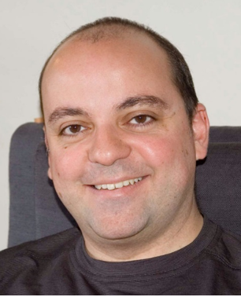
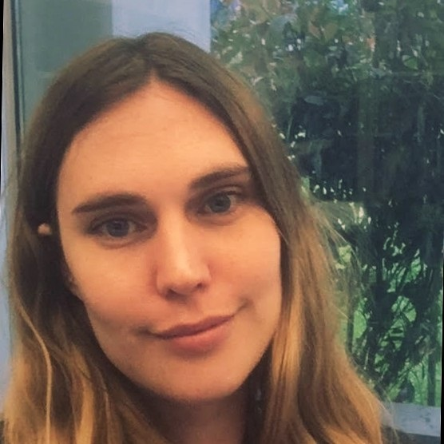
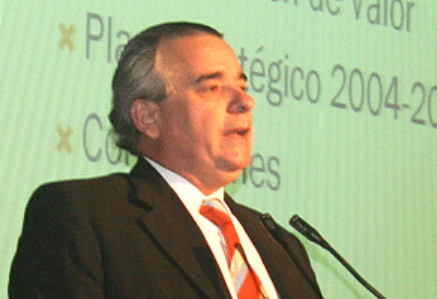
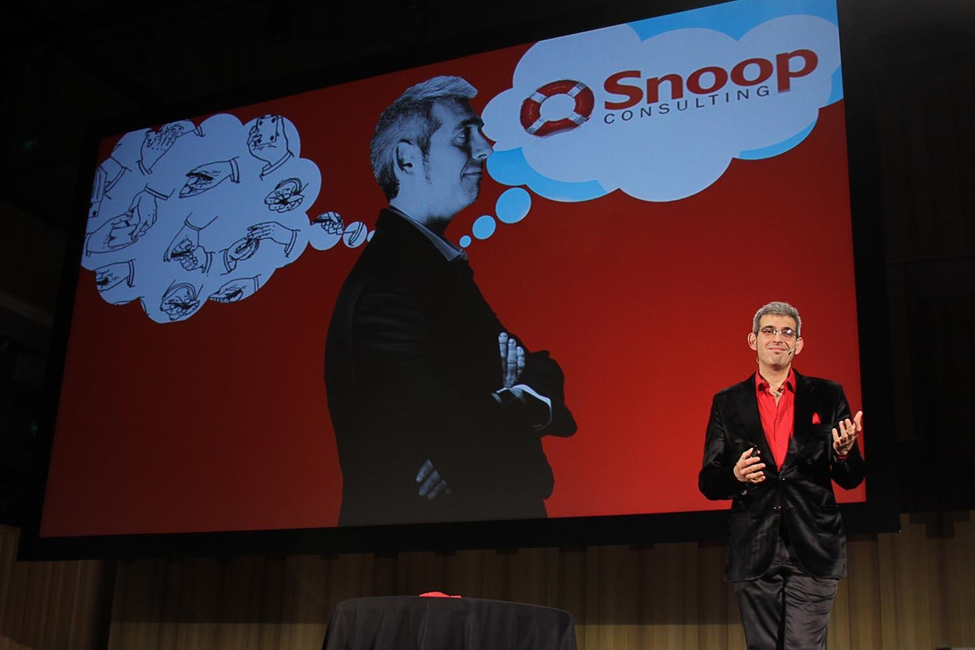

_2.png)
En esta 51 edición de las JAIIO contamos con las siguientes charlas plenarias:
-
Lunes 17 de Octubre a las 10:00 hs.
"Inteligencia Artificial Responsable / Responsible AI"
 |
Ricardo Baeza-Yates(Instituto de IA Experiencial @ Northeastern University) |
En la primera parte cubrimos cinco problemas específicos actuales que motivan las necesidades de la IA responsable: (1) discriminación (por ejemplo, reconocimiento facial, justicia, economía colaborativa, modelos de lenguaje); (2) frenología (por ejemplo, predicciones biométricas); (3) comercio digital desleal (por ejemplo, sesgo de exposición y popularidad); (4) modelos estúpidos (por ejemplo, IA adversarial mínima) y (5) uso indiscriminado de recursos informáticos (por ejemplo, modelos de lenguaje grandes). Estos ejemplos tienen un sesgo personal, pero establecen el contexto para la segunda parte donde abordamos cuatro desafíos: (1) demasiados principios (por ejemplo, principios vs. técnicas), (2) diferencias culturales; (3) regulación y (4) nuestros sesgos cognitivos. Terminamos de discutir qué podemos hacer para abordar estos desafíos en un futuro cercano para poder desarrollar una IA responsable.
In the first part we cover five current specific problems that motivate the needs of responsible AI: (1) discrimination (e.g., facial recognition, justice, sharing economy, language models); (2) phrenology (e.g., biometric based predictions); (3) unfair digital commerce (e.g., exposure and popularity bias); (4) stupid models (e.g., minimal adversarial AI) and (5) indiscriminate use of computing resources (e.g., large language models). These examples do have a personal bias but set the context for the second part where we address four challenges: (1) too many principles (e.g., principles vs. techniques), (2) cultural differences; (3) regulation and (4) our cognitive biases. We finish discussing what we can do to address these challenges in the near future to be able to develop responsible AI.
Bio: Ricardo Baeza-Yates is Director of Research at the Institute for Experiential AI of Northeastern University. Before, he was VP of Research at Yahoo Labs, based in Barcelona, Spain, and later in Sunnyvale, California, from 2006 to 2016. He is co-author of the best-seller Modern Information Retrieval textbook published by Addison-Wesley in 1999 and 2011 (2nd ed), that won the ASIST 2012 Book of the Year award. From 2002 to 2004 he was elected to the Board of Governors of the IEEE Computer Society and between 2012 and 2016 was elected for the ACM Council. In 2009 he was named ACM Fellow and in 2011 IEEE Fellow, among other awards and distinctions. He obtained a Ph.D. in CS from the University of Waterloo, Canada, in 1989, and his areas of expertise are web search and data mining, information retrieval, bias on AI, data science and algorithms in general.
-
Martes 18 de Octubre a las 18:00 hs.
"Potencial educativo de PROLOG"
 |
Verónica Dahl(@VerunicaDahl) |
Resaltar las múltiples posibilidades educacionales que ofrece Prolog, por ejemplo como primer lenguaje de introducción a la programación; como herramienta de ayuda al maestro; como facilitador la enseñanza de conceptos matemáticos y lógicos así como de otros temas menos obvios; como desarrollador de buenos hábitos de razonamiento y argumentación.
Bio: Verónica Dahl, científica argentina radicada en Canadá, lidera el proyecto internacional “Prolog Education”, que es parte de los festejos de los 50 años de Prolog (*). Ha recibido prestigiosos premios por su trabajo en Inteligencia Artificial, tales como el Calouste Gulbenkian Award y la Cátedra de Excelencia Marie Curie, de la Comunidad Europea, y ha sido honrada por la asociación de la Programación Lógica como co-fundadora de esa disciplina (**). Sus áreas de especialización son: lingüística computacional, biología molecular computacional, programación por restricciones y sistemas de conocimiento. Su investigación actual, subvencionada por NSERC -el Consejo de Investigaciones canadiense-, se enfoca en la inferencia gramatical para lenguas humanas insuficientemente estudiadas y en los usos de la IA hacia un mundo equitativo y sostenible. Como escritora ha recibido tres primeros premios por su trabajo literario; como guitarrista y cantante ha actuado en varios grupos de música latinoamericana en Vancouver, y como compositora, en trabajo interdisciplinario :-), ha dado a luz a una canción histórica sobre Clementina, nuestro primer ordenador que ella misma llegó a utilizar.
-
Jueves 20 de Octubre a las 18:00 hs.
"Healthcare and the Social Implications of Global Digital Exclusion"
 |
Luis Kun (CHDS - SSIT)
|
Healthcare and the Social Implications of Global Digital Exclusion - According to the 2021 World Economic Forum half of the world’s population lacks access to essential health services. From misinformation to conspiracy theories and fake news spreading at the speed of light through social media, Society’s challenges with information are many. For people already preoccupied with the next cyberattack and the protection of the privacy, and security of their personal information, these are mere inconveniences. Our perception: With COVID-19 acting as a catalyst for very rapid change, e-Commerce, distance learning, telework and telemedicine have all become daily tools in our homes in perhaps a semi-reluctant but yet adapting Society. Our reality: In the USA 43 million people are not connected to the Internet. The world has 3.5 billion people with no Internet connection. As of 2019, 66% of India’s Population, 83% of Pakistan’s, 87% of Bangladesh’s, and 52% of Indonesia’s lack an Internet connection. Just in these 4 countries we are talking of 1.4 billion people with no access. Although education and technology have been the channels for society’s economic advancement we have observed them in 2020 as barriers. Students, workers and retired individuals that lack online access and are being digitally excluded from economic advancement, as well as better health outcomes. As the daily world population increases so does the widening digital gap between those that have information and those that don’t, which undermines Society’s stability.
Bio: El Dr. Kun es Profesor Emérito Distinguido de Asuntos de Seguridad Nacional (CHDS) y en la Universidad de Defensa Nacional (2003-2015) y Presidente de la Sociedad de Implicaciones Sociales de la Tecnología (SSIT). Se graduó de la Marina Mercante en Uruguay y tiene un BSEE, MSEE y Doctorado en Ingeniería Biomédica de la UCLA. Es “Life Fellow” del IEEE, del Instituto Americano de Ingeniería Médica y Biológica, de la Academia Internacional de Ingeniería Médica y Biológica. Editor fundador en Jefe de la revista Salud y Tecnología de Springer. Pasó 14 años en IBM; fue Director de Tecnología de Sistemas Médicos en el Centro Médico Cedars Sinai. Kun recibió numerosos premios, incluyendo: el primer premio de Miembro Defensor de Políticas en Ingeniería Médica y Biológica de AIMBE en 2009; la Citación de Honor del IEEE-EE. UU, 2011, "Profesor Honoris Causa" Universidad de Favaloro. https://www.frba.utn.edu.ar/gibio/autoridades/
Bio: Daniela es Doctora en Ciencias Informáticas (UNLP), Especialista en Comunicación Pública de la Ciencia y la Tecnología (UBA). Ing. en Ciencias de la Computación (CE), Especialista en Ing. De Sistemas Expertos (ITBA). Entre sus áreas de investigación están Procesamiento de Lenguaje Natural, Aprendizaje Automático y Razonamiento Automático. Daniela es docente e investigadora en UADER, UAI, UNCU, UCP y UTN, Coordinadora técnica y fundadora del CETI en la Academia Nacional de Ciencias de Buenos Aires, Miembro de la Sociedad Científica Argentina y coordinadora Outreach de proyectos STEAM, Directora de la Diplomatura en Gestión de Calidad de Software, Universidad Autónoma de Entre Ríos (UADER). Directora del CI2S Lab y del IDTI Lab (UADER), Fundadora y directora del IEEE Game Technical Committee Argentina, fundadora y primer chair de IEEE CIS Argentina, Consultora independiente en sistemas inteligentes, Miembro del IEEE WCI (Woman in Computational Intelligence), líder de la rama Argentina y Miembro del Programa de Disertantes Locales IEEE AR. Entre sus galardones está el Premio IEEE (Institute of Electrical and Electronic Engineering) regional latinoamericano: “Ingeniera eminente”, Premio Nacional Sadosky, IEEE FOUNDATION FUNDS y premios Banco Río a la investigación en varias oportunidades.
-
Lunes 24 de Octubre a las 18:00 hs.
"Automated Software Engineering Research: Challenges and Opportunites"
 |
|
Marcelo d'Amorim (North Carolina State University) |
Automated Software Engineering (ASE) promises to reduce the cost of software development by automating time-consuming and error-prone tasks. In this talk, I will elaborate on some important tasks where ASE has been successful and other tasks where more research is needed, offering opportunities for researchers.
Bio: Marcelo d'Amorim obtained his Ph.D. from the University of Illinois at Urbana-Champaign in 2007. Currently, he is an Associate Professor at the North Carolina State University, USA. Marcelo's research goal is to improve software quality through program analysis and testing. He is interested in preventing, finding, diagnosing, and repairing software bugs. Marcelo is the recipient of various prestigious awards (e.g., MicrosASE oft SEIF, and ACM Distinguished Reviewer Award) and regularly serves on program committees of top-tier conferences (e.g., ISSTA, ASE, and ICSE).
-
Martes 25 de Octubre a las 10:00 hs.
"The Multicultural and Collaborative Hacker Way"
Martín Nordio(Red-Expel GmbH, Switzerland) |
When looking into software development, there are many aspects that can impact the performance of a project, from technical aspects such as requirements, or development processes, to human factors. If we look at, for example, development processes, should companies apply the same development process for all their projects, or should they adapt depending on the team? Should software teams always apply the same development process, or should they change depending on the project? And what about running the same project but with new team members, should we continue working in the same way? And how does human factors such as are relationship between team members, impact in the success of the project? Should teams adapt depending to different circumstances?
Software engineers and software development teams can learn a lot from sport teams, for example football teams, starting from how to manage the team and the group, their strategies, their vision as well as their dynamics and fast adaptation to different situations.
In this talk, we will present what we call the " The Multicultural and Collaborative Hacker way", our software development approach what focuses not only on software engineering concepts but also includes the team and the person as a whole (privately and professionally). Our “collaborative hacker way” is a constant searching of (1) how can team members perform best depending on the current project and its tasks, and (2) how to improve the personal development (professionally and privately) of our team members. Our Hacker Way applies well-known computer science concepts and being able to change and adapt depending on the circumstances, and by combining different cultures and celebrating diversity.
Bio: Martin Nordio is an Argentinean software engineer and computer scientist. He started his studies at University of Rio Cuarto (Argentina) where he got his licenciatura (diploma) in Computer Science, and continued his education at University of Republica (Uruguay) graduating as Master in Computer Science. In 2009, he graduated from ETH Zurich (Swiss Federal Institute of Technology Zurich) with the degree of Doctor of Sciences in Computer Science, under the supervision of Prof. Bertrand Meyer. He worked at ETH Zurich for more than 10 years as research assistant and researcher, and later as lecturer where he published more than 30 articles at international conferences and journals. He taught bachelor and master software engineering courses at ETH Zurich, and for several years, he taught a distributed software engineering course with a collaborative project with more than 10 universities in South America, Europe, Asia, and Australia.
Following the roots of an entrepreneur family, together with Christian Estler, he developed codeboard.io: a web-based IDE to teach programing. Codeboard has been used by more than 5 million students from many universities and schools all around the globe.
Since 2012, he joined a startup, and he has been working in the private industry, as a software engineering specialist, technical leader, software architect and senior software developer. He has been working for clients in different industries ranging from medical devices developing software for PCR technologies to engineering industries including the world’s leading supplier of total quality solutions from fiber to fabric. For more than 10 years, Martin has been developing products on a multicultural and globally distributed setting. In the last years, Martin has been working with an innovative team co-located in Switzerland and Israel.
-
Martes 25 de Octubre a las 18:00 hs.
"Interoperabilidad y estandarización en la producción oficial de estadísticas: la experiencia canadiense"
|  |
Flavio Rizzolo(University of Toronto - Department of Computer Science)
|
Arquitectura de datos, estándares, e interoperabilidad, relacionados a ciencias de datos y producción de estadísticas.
Bio: Flavio Rizzolo es un especialista en interoperabilidad e infraestructura de datos y tiene una vasta experiencia en el desarrollo de estándares internacionales y soluciones informáticas en las áreas de datos, metadatos y representación del conocimiento.
Graduado en las áreas de sistemas (U. CAECE) y ciencias de la computación (U. de Toronto), ha desarrollado su carrera en proyectos multidisciplinarios internacionales en los sectores público, privado y académico. Actualmente se desempeña en varios proyectos de modernización estadística de Statistics Canada (la agencia nacional estadística canadiense) y de la Comisión Económica para Europa de las Naciones Unidas (UNECE-ModernStats). También participa en múltiples actividades de investigación y desarrollo, incluyendo la Iniciativa de Documentación de Datos (DDI) y el Comité de Datos del Consejo Científico Internacional (CODATA-ISC).
-
Miércoles 26 de Octubre a las 18:00 hs.
"Aprendizajes del Proyecto ARPHAI: Gestión epidemiológica basada en inteligencia artificial y ciencia de datos"
|  |
Celeste de Marco(ARPHAI - CIECTI) |
|

El objetivo de la presentación es compartir los aprendizajes del proyecto ARPHAI a partir de 3 ejes para reflexionar: oportunidades y desafíos del uso de ciencia de datos e IA para la salud y sus potencialidades, la interdisciplinariedad de proyectos de estas naturaleza y el entramado institucional para construir en el vínculo entre investigación-gestión. ARPHAI es un proyecto asociativo de investigación que comenzó en octubre de 2020 al ser una de las nueve propuestas seleccionadas entre más de 150 en una convocatoria cofinanciada por el Centro Internacional de Investigaciones para el Desarrollo (IDCR) de Canadá y la Agencia Sueca de Cooperación Internacional para el Desarrollo (Sida) de Suecia, dentro del marco del Programa Global South AI4COVID. El consorcio de investigación es liderado por el CIECTI y conformado, además, por la Subsecretaría de Políticas en Ciencia, Tecnología e Innovación y equipos técnicos del Ministerio de Salud de la Argentina con el objetivo contribuir a la gestión epidemiológica a partir del desarrollo de pilotos de herramientas basadas en Inteligencia Artificial y Ciencia de Datos.
Bio: Celeste De Marco, MBT Candidate en UDESA, Lic. en Comercio Internacional (UNQ) con estudios de posgrado en Economía Política (FLACSO). Integra el equipo coordinador del Proyecto ARPHAI y coordina el área de economía digital y ciencia de datos en el Centro de Estudios Interdisciplinarios en Ciencia, Tecnología e Innovación (CIECTI).
Bio: Verónica Xhardez, Dra. en Ciencias Sociales (UBA), Mag. en Ciencias Políticas y Sociología (Flacso) y Lic. en Ciencias Antropológicas (UBA). Investigadora del área de Economía Digital del Centro de Estudios Interdisciplinarios en Ciencia, Tecnología e Innovación (CIECTI). Actualmente es Coordinadora Técnica del Proyecto ARPHAI. Es también docente e investigadora de la Universidad Nacional de Tres de Febrero (UNTREF).
-
Jueves 27 de Octubre a las 12:00 hs. a 14 hs.
“Oscar Varsavsky: El científico rebelde”. Proyección del documental, Conversación con el director y espacio para preguntas y respuestas.
 |
Rodolfo Petriz(Profesor de Enseñanza Media y Superior en Filosofía por la Universidad de Buenos Aires ) |
Duración: 98 minutos. Género: Documental. Formato: HD 1920x1080. Dirección: Rodolfo Petriz. Dirección de Fotografía: Rodrigo Sánchez Mariño. Montaje: Rodrigo Sánchez Mariño y Rodolfo Petriz.
Sinopsis: Un periodista de ciencia lee en un libro de divulgación científica que a fines de los ´60 no había centro de investigación argentino que no discutiera los planteos sobre ciencia, tecnología y sociedad del matemático y pionero de la computación Oscar Varsavsky. Comienza entonces una búsqueda para conocer quién fue este científico, cuáles eran sus provocadoras ideas y que vigencia tiene en la actualidad su pensamiento entre los investigadores de nuestro país. Así, esta película permite descubrir a un científico hondamente preocupado por el desarrollo y el cambio social y que enfatizaba la necesidad del compromiso del hombre de ciencia con la política de su tiempo.
Bio: Es Profesor de Enseñanza Media y Superior en Filosofía por la Universidad de Buenos Aires y Magister en Periodismo Documental por la Universidad de Tres de Febrero. Fue director, productor y guionista del documental “El Navegante Solitario” (2019)”, sobre el legendario Vito Dumas, que tuvo su premiere en BAFICI 2019 y formó parte numerosos nacionales e internacionales. Trabajó durante una década como periodista especializado en temas científicos. Fue colaborador regular del suplemento Futuro del diario Página 12 hasta su cierre, y trabajó para el diario Perfil y la revista Newsweek, entre otros medios. También publicó el libro “LUZ DE CIENCIA. El láser en Argentina y la historia del DEILAP” (2013). Tiene una larga experiencia como docente universitario y terciario en distintas instituciones de nuestro país, entre ellas la Universidad Tecnológica Nacional, la Universidad de Ciencias Empresariales y Sociales y la Fundación UCES.
Moderador: Bruno Massare es director de la Agencia de Noticias TSS, de la Universidad Nacional de San Martín, y con anterioridad fue secretario de Redacción de la revista Information Technology. Es presidente de la Red Argentina de Periodismo Científico, docente de la carrera de Comunicación Social de la Universidad Nacional de Moreno, investigador y candidato a doctor en Ciencias Sociales y Humanas por la Universidad Nacional de Quilmes.
-
Jueves 27 de Octubre a las 15:00 hs.
"De concentrado a Federal, así crece el sector del software"
|  |
Carlos Pallotti(Especialista en
|
El sector de software crece en Argentina sostenidamente desde hace 20 años, tanto en empleos, como en generación de divisas a través de las exportaciones.
¿Cómo es este crecimiento?, ¿en qué lugares se desarrolla mas?, ¿cuánto produce cada conglomerado tecnológico? ¿Es sustentable el crecimiento?
Bio: Carlos Pallotti es especialista en políticas de desarrollo tecnológico. Tiene más de 30 años en la industria de las tecnologías de la información y los servicios del conocimiento, desarrollando negocios en su carácter de empresario y promoviendo e implementando políticas desde el ámbito público en varios países de América Latina. Emprendedor, fundador y líder de varias compañías y asociaciones empresarias.
Ha sido responsable por las políticas públicas aplicadas a las industrias tecnológicas en el gobierno de Argentina, y asesora varias administraciones nacionales y provinciales en materia de industrias del conocimiento.
Posee 24 reconocimientos internacionales, entre ellos ha sido reconocido como la personalidad del año 2017 en América Latina en desarrollo tecnológico y atracción de inversiones.
Ha liderado varias importantes cámaras de negocios, fundaciones y entidades de promoción sectorial.
-
Jueves 27 de Octubre a las 14:30 hs.
“Una Nueva Esperanza” Paradojas, mitos y datos de eso que llamamos Industria del Software.
|  |
Gustavo Guaragna(Snoop Consulting) |
Bio: Gustavo Guaragna es socio fundador, presidente y CEO de Snoop Consulting, reconocida empresa de Transformación Digital con más de veinte años en el mercado. En 2017 Guaragna fue elegido CEO DEL AÑO por sus pares de CESSI y en 2010 quedó posicionado #69 en el ranking de las personalidades con mejor imagen empresarial del país.
Como emprendedor, fue socio fundador de varias empresas, destacándose - además de Snoop Consulting- la consultora de informática Tesis, todavía activa. Snoop Consulting es elegida desde hace años, por los CIOs como una de las 10 empresas más innovadoras del país y fue la primera Pyme Argentina en recibir el Premio a la Excelencia Empresarial de IDEA y el Premio Sadosky a la Trayectoria Empresarial.
Desde el 2005, Guaragna forma parte de la Comisión Directiva de la CESSI y del Polo Informático La Plata. Entre el año 1994 y 1998 fue parte del laboratorio de investigaciones LIFIA de la UNLP. Fue presidente de la Plataforma Tecnológica Argentina (PLATA) desde la que representó al país en Polonia. Actualmente -y desde hace años- es responsable del Observatorio Permanente de la Industria del Software y Servicios Informáticos (OPSSI).
Además, ha organizado importantes eventos de conocimiento entre los que se destaca el “Argentinian Symposium on Software Engineering (ASSE)” de 2006 como Chairman y las tres ediciones de los eventos masivos “Snoop Update”.
Amante del arte y de la ciencia, es mago ilusionista desde pequeño y se dedica a actuar profesionalmente y dictar conferencias sobre la especialidad, llegando a actuar en el mítico “Magic Castle” de Hollywood.
-
Jueves 27 de Octubre a las 16:30 hs.
“Co-producción de Grandes Sistemas Informáticos para el sector público: el caso e-Sidif"
Panel: Raúl Rigo ( Secretario de Hacienda del Ministerio de Economía de Nación), María Eva Sánchez (Directora General de Sistemas Informáticos de Administración Financiera – Secretaría de Hacienda), Gabriel Yoguel (Investigador de CIECTI-UNGS), Gabriel Baum (Investigador LIFIA-UNLP)
Resumen: El desarrollo de grandes sistemas de información en el ámbito público constituye un desafío tecnológico, organizacional y político con impactos directos e indirectos a nivel social y económico. El Sistema Integrado de Información Financiera Internet(e-Sidif) constituye una solución tecnológica co-producida a lo largo de los últimos 17 años por dos instituciones que han trabajado en forma conjunta: LIFIA (Laboratorio de Investigación y Formación en Informática Avanzada de la Universidad Nacional de La Plata) y la Secretaría de Hacienda del Ministerio de Economía de la Nación.
El e-Sidif es el actual Sistema de Administración Financiera del Estado argentino. Desde su puesta en funcionamiento (2004-2005) ha dado lugar a un incremento notable en el alcance funcional de su misión, un proceso de actualización tecnológica y la incorporación de herramientas que dinamizan la gestión financiera pública.
Además de identificar las etapas y principales hitos en la co-producción del e-Sidif, los resultados del estudio plantean potencialidades para impulsar instrumentos de políticas orientadas por misiones basadas encompras públicas para la innovación y desarrollar capacidades dinámicas estatales en la dirección de las políticas públicas orientadas por misiones.
El Panel expondrá la experiencia conjunta desde los diferentes puntos de vista de los actores involucrados así como las conclusiones del estudio realizado.